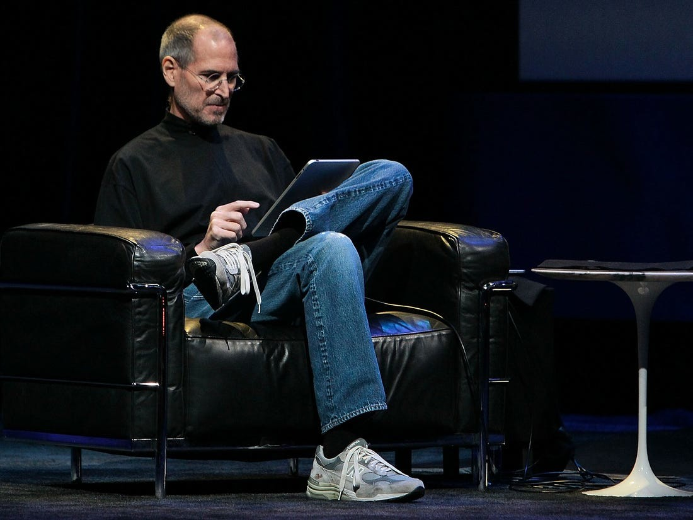

Informáticos más influyentes
Mentes más influyentes de nuestra época
Elon Musk
Elon Musk ha fundado muchas empresas (PayPal, Tesla Motors, SpaceX, Hyperloop, SolarCity, The Boring Company y OpenAI) y amasa una importante fortuna, aunque en numerosas ocasiones ha confesado que lo que le mueve a trabajar con tanto empeño no es el dinero, sino su deseo de mejorar el mundo.
Steve Jobs
Steve Jobs tuvo una visión y logró llevarla a cabo. Y, además, esa visión no era cualquier cosa: transformó radicalmente nuestra forma de vivir. Los ingenieros, los diseñadores industriales y los programadores que no quieren a Jobs suelen decir que todo lo que él hizo ya estaba inventado. Lo que no quita que para mi sea un visionario y alguien a quien admirar.
Mark Zuckerberg
Mark Zuckerberg es el creador de Facebook, dejó sus estudios en Harvard para seguir adelante con su proyecto y triunfó, por muchas polémicas que haya e indiferentemente de cómo sea como persona, es alguien que ha cambiado el mundo con su empresa, por no decir que a los 25 años su empresa ya estaba valorada en más de 1000 millones de dolares. Es un referente para cualquier que quiera emprender (siempre que no tengas, ética con tus compañeros, claro).
Brendan Eich
Conocido fundamentalmente por ser considerado uno de los padres de Javascript. Brendan Eich estuvo siempre involucrado en Mozilla, desde el mismo nacimiento del proyecto como idea embrionaria en 1998 dentro de Netscape. Recientemente fundó la compañía Brave Software, y que crearon Brave, un navegador web de código abierto basado en Chromium.
Kim Dotcom
Hablamos de cómo una vida de excesos, estafas y buenas ideas que lo llevaron de ser un millonario excéntrico al enemigo número uno del FBI. Sí, por mucho que Kim Dotcom sea un criminal no quita que revolucionase la informática al fundar en 2005 Megaupload, después de muchas disputas legales, cerrar la empresa y cambiar el nombre por MEGA, la empresa de almacenamiento online y usado para descargas online. Para muchos, Kim estaba trabajando en un sitio de intercambio de música legal que acabaría con las discográficas. Para las autoridades, DotCom incurrió en fraude informático, abuso de información privilegiada, malversación de fondos, posesión de bienes robados y algunos cargos más.